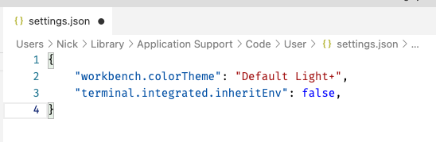
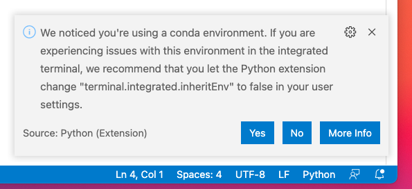

Setting up Your Computer for Data Science¶
One of the major learning goals of this class is for you to be comfortable managing all the software and settings required for you to do data science on your own computer.
Why deal with all these headaches of setting up your own environment, you may ask? Why not just use a cloud platform like Google Co-lab or a virtual machine with everything already setup?
Getting data science tools installed and working together is, for better or worse, a pretty core part of the day-to-day life of Data Scientists, and learning how to troubleshoot problems quickly is an important skill for being productive. But it is a skill that takes time and energy to learn, and so in most classes – which want to focus on teaching topics like statistical analysis or programming concepts – instructors choose to provide students with clean, ready to use environments so everyone can focus on those topics. For example, if the MIDS Python Bootcamp included a module on setting up Python environments instead of providing you with a clean virtual machine, you’d probably end up learning ~25% less programming!
But the problem with this approach is that if every course you take pursues this strategy, you may find that at the end of the day, you don’t feel empowered to go do data science yourself when those clean VMs are taken away at the end of the semester. Moreover, it means you may not know enough about how data science tools work to debug problems on your own when they come up.
So in this course, we’re going to address environment setup head on. That will probably mean you’ll get a little annoyed at the fragility of many of these tools, and get frustrated when you spend hours trying to find a setting that got set wrong (though we’ll try and minimize these experiences!), but try to think of this time as wasted, but part of your data science education!
What We’ll Be Setting Up¶
To set ourselves up for this course (and hopefully our careers!), we’ll need to set up the following things:
Python and the conda package manager: This is a Python-centric course, so the first thing we’ll need to do is install Python and a robust, data-science-appropriate package manager.
Visual Studio Code (VS Code): In this course, we’ll become familiar with two editors: VS Code and Jupyter Lab. Both are extremely commonly used in data science, and while you may eventually choose you prefer one of the other, we’ll spend time introducing you to both. But the first one we’ll setup is VS Code, because it is super useful for a huge range of not just data science tasks, but also environment setup.
Augmented Command Line: As a data scientist, you’ll spend a lot of time working at the command line, so it’s a good idea to invest a little in setting up something more advanced than the default command line tool offered by your operating system (e.g. Terminal/CMD Prompt/Powershell). In addition, this will give us a chance to learn a little about aspects of how the command line works, which will be really important to effective troubleshooting.
Installing Python with Miniconda¶
The first thing you’ll like want to do on any computer you work with is install both Python and the package manager conda. This is necessary because unlike a language like R where you can install packages with the install.packages() command, Python doesn’t have an internal tool for installing packages, so we need a tool like conda if we want to use anything other than vanilla Python (e.g. tools for plotting, numpy, pandas, etc.).
Python has two main package managers: pip and conda. While most software engineers use pip, most data scientists like conda. That’s because while pip is good at installing Python libraries, conda is better at installing many of the big dependencies that underlie data science tools. Plus, if we install conda, it will come with pip, so we get the best of both worlds!
Why miniconda?¶
So the first thing we need to do to get started with Python is go to the Miniconda download page and download the most recent installer for our system (as of July 9 2021, that’s Python 3.9).
Note that there are actually two well known ways to get conda on your system – installing Anaconda from anaconda.com, and installing miniconda from docs.conda.io. It is my strong recommendation that you use miniconda. That’s because if you install Anaconda from anaconda.com, you get not only Python and the conda package manager, but also dozens of pre-loaded packages. And while that sounds great, the reality is that it tends to cause lots of package conflicts once you start adding anything new to your installation. miniconda, as the name implies, is the “mini” version of the Anaconda package, and basically only includes Python and a couple core utilities (conda, pip, etc.). As a result, a miniconda installation is much less likely to cause you package conflict problems down the road.
If you already have a conda installation: My recommendation is to delete it and start fresh. Deleting your Python installation can feel scary once you’ve set stuff up, but you don’t want to get in the practice of being too precious about your Python installations, as you’ll often have to just delete it all to deal with some software conflicts.
Thankfully, deleting anaconda/miniconda is easy – just delete the miniconda3 / anaconda3 folder you created during installation! The great thing about conda is that everything lives in that folder, so you can easily delete it and start fresh!
Installation¶
Go to the miniconda install page.
Download a 64 bit version of miniconda. The latest Python 3.x package is probably best. On a mac, go with the
pkginstaller.Run the installer, paying attention to the following options:
When you’re asked where to install the software, you want to install it “For me only”, not “Install for all users of this computer”. Note that as of July 2021, you may find the “for me only” has a warning saying you can’t install there, but if you click a different option then click on the “for me only” option again, the warning goes away.
On Windows, you’ll be asked if you want to add miniconda to your PATH variable. Although it recommends that you do not do this, DO add it to your PATH. This will be important when we change how our command line works.
Miniconda is installed!
Why did we want to install it “for me only” in step 3? To install software for all users, you have to install software at the level of your operating system so its visible to all users. And your computer is very protective of anything installed at the level of the operating system because of the dangers of computer viruses, and so anything installed there can run into “permission” problems when it tries to run. Anything installed “for me only” gets installed in your user folder which your computer is less paranoid about, leading to fewer problems.
Now we also want to change one setting in miniconda. When you install packages using conda, conda can actually pull from a number of different package repositories (called “channels”). The default for this is the “anaconda” channel, but the best channel is actually called conda-forge, so to set that as the default:
Open the default command line on your computer (On a mac, it’s
TerminalinApplications > Utilities; on windows, you can usePowerShell), and run the following two commands:conda config --add channels conda-forge(you may be told you already have it listed)conda config --set channel_priority strict
And we’re done!
Installing VS Code¶
VS Code is kinda stupid-easy to install – just download it here!
Then I’d recommend learning how to integrate your Python installation with VS Code. To do so, go check out this video tutorial I made here (you’ll probably want to skip the first few sections on miniconda and vscode installation and jump to setup at about minute 7).
Then if you’re on a mac, we want to do one more important thing: setup your system so if you type code [filename] on the command line, VS Code will open [filename] (this gets setup automatically on Windows, but requires a deliberate step on macs):
In VS Code, type
Command-Shift-P. This will cause the Command Pallet to open at the top of your open window.Type
Shell Command: Install code command in PATHand select that open.Wait for confirmation.
Set terminal.integrated.inheritEnv to False in VS Code¶
In order to ensure that the integrated terminal in VS Code works properly with miniconda, we have to modify one setting. To do this, in VS Code go down to the bottom left corner and click on the gear icon, select “Command Pallet…”, and type “Preferences: Open Settings (JSON)” (note the (JSON) at the end). That should bring you to a relatively blank document. Between the curly braces, add the following:
"terminal.integrated.inheritEnv": false,
So that your file looks something like:
(Note the commas at the end of each line). If you forget the step VS Code will try to prompt you to set it later with this notification:
so if you see that notification make sure to select yes.
Set Up an Augmented Command Line¶
The last thing we’re gonna do to fully setup our environment is install and configure a better command line tool. How we do this depends on your operating system, though, so please follow the appropriate link below: